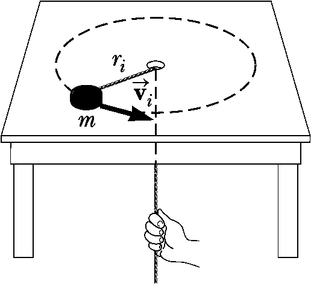
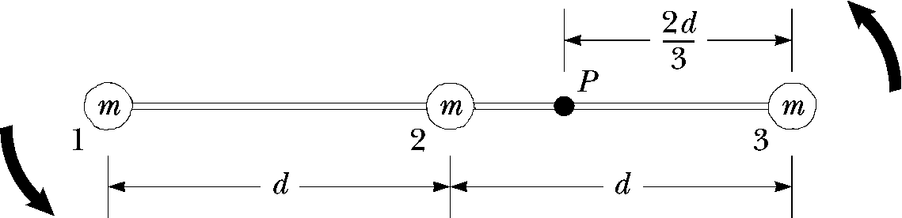

Homework 7 - Angular Momentum
Problem 7.1
If \(|\vec{A} \times \vec{B}| = \vec{A} \cdot \vec{B}\), what is the angle between \(\vec{A}\) and \(\vec{B}\)?
Problem 7.2
A puck of mass \(m_1 = 80.0~g\) and radius \(r_1 = 4.00~cm\) glides across an air table at a speed of \(\vec{v} = 1.50~m/s\) as shown in the below figure. It makes a glancing collision with a second puck of radius \(r_2 = 6.00~cm\) and mass \(m_2 = 120~g\) (initially at rest) such that their rims just touch. Because their rims are coated with instant-acting glue, the pucks stick together and rotate after the collision (right side of figure).
- What is the angular momentum of the system relative to the center of mass?
- What is the \(\vec{\omega}\) about the center of mass?

Problem 7.4
A puck of mass \(m = 50.0~g\) is attached to a taut cord passing through a small hole in a frictionless, horizontal surface as shown in the below figure. The puck is initially orbiting with speed \(v_i = 1.50~m/s\) in a circle of radius \(r_i = 0.300~m\). The cord is then slowly pulled from below, decreasing the radius of the circle to \(r = 0.100~m\).
- What is the puck’s speed at the smaller radius?
- Find the tension in the cord at the smaller radius.
- How much work is done by the hand in pulling the cord so that the radius of the puck’s motion changes from \(0.300~m\) to \(0.100~m\)?

Problem 7.3
A rigid, massless rod has three particles with equal masses attached to it as shown in the below figure. The rod is free to rotate in a vertical plane about a frictionless axle perpendicular to the rod through the point \(P\) and is released from rest in the horizontal position at \(t=0\). Assuming m and d are known, find
- the moment of inertia of the system of three particles about the pivot.
- the torque acting on the system at \(t=0\).
- the angular acceleration of the system at \(t=0\).
- the linear accel of particle 3 at \(t = 0\).
- the maximum kinetic energy of the system.
- the maximum angular speed reached by the rod.
- the maximum angular momentum of the system.
- the maximum speed reached of particle 2.
